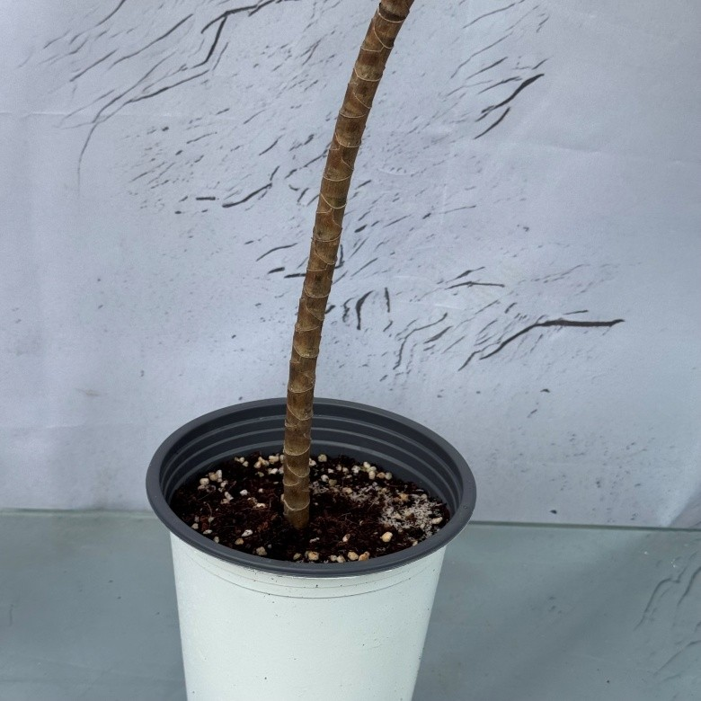

노란 줄무늬 잎이 시원하게 펼쳐지는

짙은 초록 잎 가장자리에 노란 줄무늬가 선명하게 들어간 관엽식물입니다.
부드러운 곡선으로 뻗은 외목대 줄기 끝에 잎이 풍성하게 모여 있어
거실, 창가, 사무실 어디에 두어도 산뜻한 포인트가 됩니다.



| 높이 | 50~55cm |
| 화분 지름 | 15cm |
| 구성 | 송오브인디아 1개 |
| 빛 | 밝은 간접광이 드는 곳이 좋습니다. 강한 직사광선을 오래 받으면 잎이 탈 수 있습니다. |
|---|---|
| 물 | 겉흙이 충분히 마르면 흠뻑 주세요. 과습하면 뿌리가 상할 수 있습니다. |
| 온도 | 따뜻한 환경을 좋아합니다. 추위에 약하니 겨울에는 실내 10℃ 이상을 유지해 주세요. |
| 습도 | 건조하면 잎끝이 마를 수 있어 가끔 잎에 분무해 주세요. |
식물 특성상 잎 무늬, 크기와 수형은
개체마다 조금씩 다를 수 있습니다.
드라세나는 반려동물이 섭취하면 탈이 날 수 있어
반려동물의 손이 닿지 않는 곳에 두어 주세요.